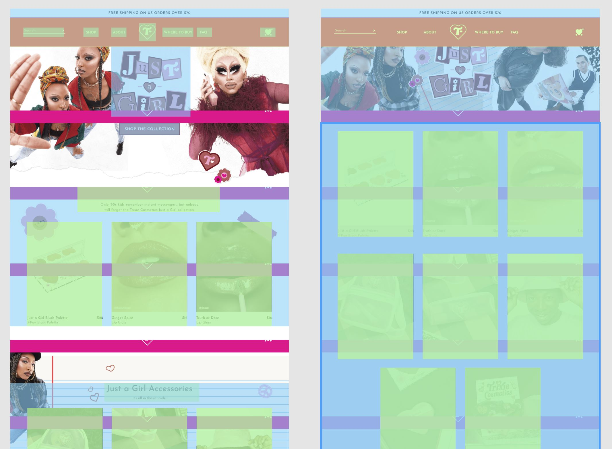
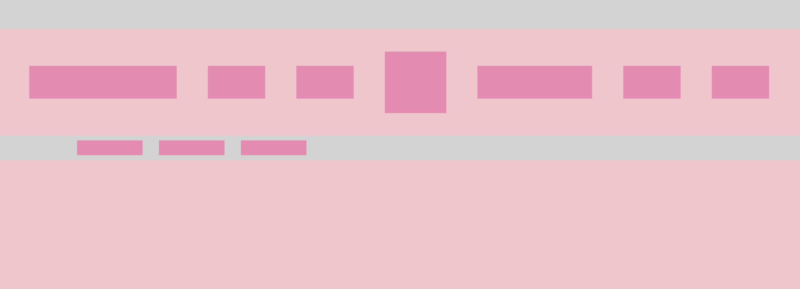
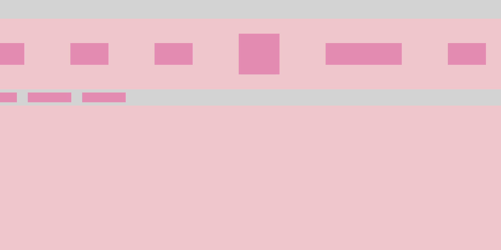

As a coding novice, learning to position is an essential skill. This project served as a flexbox and media queries exercise, allowing me to create responsive websites. I used the Trixie Cosmetics website as my reference for my divs.
I imported a screenshot of the webpage into Figma where I could begin drafting my design. On another layer, I drew boxes over the divs. This allowed me visualize where I needed parent containers and how many children were in each.
The second challenge was creating a responsive webpage that could be viewed at mobile screen size. Flexbox could manage smaller viewport changes, but for different screens I used media queries. Once the viewport width was below a certain size, I decreased the amount of divs per row and their size. This can be seen in the above comparison between the desktop and mobile versions.
